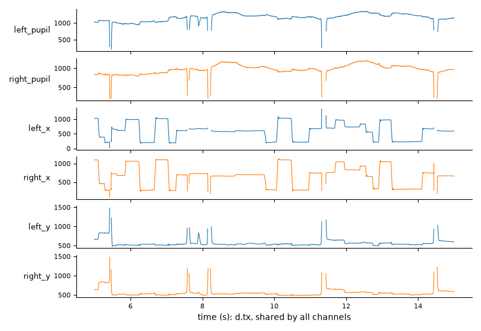
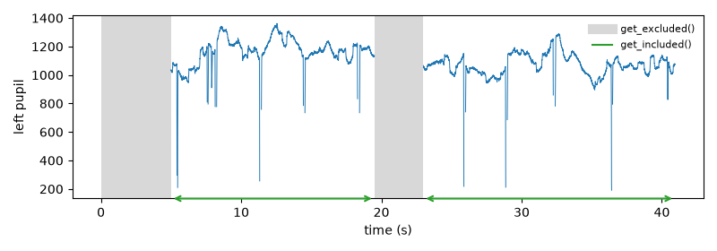

Data objects#
Data classes#
All data are held in one class, EyeData. It holds whatever your
eye tracker recorded, for one or both eyes: pupil size, gaze position
(x, y), or both. The experimental setup (screen geometry, see
ExperimentalSetup) and the calibration results can be stored with
any of them.
The generic methods (events, intervals, masks, downsampling, slicing, …)
work for any data. The methods that need pupil data are in the namespace
d.pupil (e.g., d.pupil.blinks_detect()); they raise an error if
the object has no pupil data (“no pupil data; available channels: left_x,
left_y”). The same holds for the methods that need gaze data, in d.gaze
(e.g., EyeData.gaze.mask_offscreen()), or both (e.g.,
foreshortening correction). The plots
are in d.plot (e.g., d.plot.pupil_plot(), see Plotting).
An object is usually created by reading a file (see Loading and saving data):
import pypillometry as pp
d = pp.EyeData.from_eyelink("recording.edf")
Printing the object, or showing it in a notebook, gives an overview of
its contents. summary() returns the same information
as a dictionary.
Eyes and variables#
The time series (channels) are stored in the attribute data, an
EyeDataDict. Their keys have the form <eye>_<variable>, e.g.
left_pupil, right_x or left_y (eye names cannot contain
_). Each channel holds its values and its mask layers (see below). All
channels have the same length as the time vector d.tx (in ms), so
they stay aligned: cropping, downsampling or removing samples changes
values and layers together.
d.eyes # ['left', 'right']
d.variables # ['x', 'y', 'pupil']
d["left_pupil"] # a numpy masked array
d["left", "pupil"] # the same
d.data["left_pupil"] # the stored values (numpy array)
d.tx # time in ms
d.fs # sampling rate in Hz
The channels of the short example dataset over 10 seconds, all on the same time axis:

Assigning to a channel (d["left_pupil"] = ...) replaces its mask
layers as well; to change only the values, see
Changing values.
Most methods take eyes= and variables= arguments (a name or a
list). When they are left empty, all existing channels are processed;
unknown names raise an error that lists the available channels:
d.pupil.lowpass_filter(cutoff=4) # both eyes
d.pupil.lowpass_filter(cutoff=4, eyes="left") # only the left eye
d.plot.plot_timeseries(variables=["x", "y"]) # only gaze
Methods that return one result per channel return a dict with the same
keys, e.g. d.get_blinks()["left_pupil"] or
d.stat_per_event(epochs)["right_pupil"].
New eyes and variables can be added. For example,
merge_eyes() combines the pupils of both eyes into
mean_pupil (eye mean, variable pupil), and you can store
your own arrays with d["left", "myvar"] = array.
See the tutorial Processing monocular and binocular data for examples.
Masks, layers and policies#
Samples can be masked, i.e. marked as unusable without removing them. Missing samples (NaN), blinks and samples where the gaze is off the screen are typical examples. Masked samples are left out of averages, segments, statistics and filters. This section gives an overview; see Missing data for how each method treats masked samples and for common tasks.
Mask layers#
Each channel (e.g., left_pupil) keeps a set of named mask layers
that record why a sample is masked. Each method sets only its own layer:
layer |
set by |
meaning |
|---|---|---|
|
missing |
|
|
reconstructed |
|
|
missing |
|
|
missing |
|
|
|
missing |
|
|
not part of the analysis |
NaN is not a layer: it is read from the values. Detection methods store
what they find in their layer and return the object, so they can be
chained. Running a detector again replaces its layer, and
clear_layer() removes a layer. The results are read
with getters that return a dict of Intervals keyed by channel
(e.g., "left_pupil"), in ms:
d.pupil.blinks_detect() # sets the "blink" layer
d.get_blinks()["left_pupil"] # the blinks (runs of the layer)
d.get_layer_intervals("offscreen") # runs of any layer
d.mask_as_intervals("left", "pupil") # all masked stretches
d.clear_layer("blink") # undo blink detection
d.plot.plot_masked() # where is data masked?
Interpolation keeps the "blink" layer and adds "interpolated", so
you can always tell recorded from reconstructed samples (e.g.,
get_interpolated()). The quality report
splits the masked time by layer.
Mask policies#
A mask policy (MaskPolicy) decides which layers make a sample
unusable. There are three predefined policies:
policy |
masked samples |
|---|---|
|
NaN, blinks, off-screen gaze, eye divergences, user masks and excluded periods; interpolated samples are used |
|
as |
|
nothing (not even NaN) |
All processing and analysis methods read the data under one policy: the
default one unless you pass policy=. Filters
(lowpass_filter(),
smooth_window()) and the baseline model bridge the
unusable samples linearly instead of using their values, and only change
the usable samples; masked samples keep their values. Segments,
stat_per_event(), scale(),
merge_eyes(), downsample() and
the quality report leave out the unusable samples.
mask() and get_values() give the
mask (or the values with NaN) of a channel under a policy; d["left_pupil"]
(a masked array) and d.data.mask use the default policy:
d.mask("left", "pupil") # True where unusable (default policy)
d.mask("left", "pupil", policy="strict") # interpolated samples too
d.get_values("left", "pupil") # values, NaN where masked
seg = d.get_segments(epochs, "left_pupil", policy="strict") # without interpolated samples
d.stat_per_event(epochs, policy="strict")
Excluded periods#
Some parts of a recording are not part of the analysis at all, e.g., the
calibration at the start or breaks between blocks. The data there may be
perfectly valid, so they should not count as missing data or blinks.
exclude_intervals() stores such periods with the
object (the recording-wide "excluded" layer) and masks all variables
during them, also variables added later:
breaks = d.get_intervals(start="break_start", end="break_end", units="ms")
d = d.exclude_intervals(breaks)
d = d.exclude_intervals([(0, 2 * u.min)]) # calibration at the start
d = d.exclude_intervals([(58 * u.min, "<end>")]) # until the end
d = d.exclude_intervals(d.get_intervals(start="<start>", end="Start Block 1", units="ms"))
d.get_excluded() # the excluded periods
d.excluded_duration("min") # their total duration
For example, with the first 5 seconds and a “break” excluded,
get_excluded() and get_included() give
the excluded periods and the parts in between:

keep_intervals() does the opposite: it excludes
everything outside the given periods, e.g., to keep only the fMRI run:
run = d.get_intervals(start="rsfMRI_ONSET", end="rsfMRI_END", units="ms")
d = d.keep_intervals(run)
Because the samples are masked, everything that ignores masked data
(averages, scale(), segments, …) also ignores the
excluded periods (also where the data were interpolated). Unlike other
masks, excluded periods are not blinks: blink detection cuts blinks at
them, and a blink that ends in an excluded period is not interpolated. The layer moves with the samples when the data are
sliced or downsampled, and it is saved with the object;
d.clear_layer("excluded") removes the excluded periods.
get_included() returns the periods between them. To
get rid of the excluded data altogether, split_excluded()
returns one object per included period, and
remove_intervals() deletes the excluded samples and
joins the rest (the time vector and the events are shifted so that there
are no gaps):
d.get_included("sec") # the periods that are not excluded
parts = d.split_excluded() # list of objects, original time
joined = d.remove_intervals(d.get_excluded()) # one object, time re-aligned
Pipelines and history#
Processing steps can be combined into a pipeline with |:
d = pp.EyeData.from_eyelink("recording.edf")
d = d | (pp.pupil.blinks_detect()
| pp.pupil.blinks_interpolate()
| pp.pupil.lowpass_filter(cutoff=4)
| pp.downsample(50))
pp.pupil.<method> and pp.gaze.<method> are the methods of
d.pupil and d.gaze, and the generic methods are available at the
top level (pp.crop, pp.downsample, pp.scale, …), with the
same arguments. d | step does not change d: it returns a processed
copy. A pipeline is a value that can be stored and applied to several
datasets; applied as a whole, it copies the data only once. (Without the
parentheses, Python reads d | a | b as (d | a) | b, which makes a
copy at each |: the result is the same, but it needs more memory for
long recordings.)
preproc = pp.pupil.blinks_detect() | pp.pupil.blinks_interpolate() \
| pp.pupil.lowpass_filter(cutoff=4)
print(preproc)
data = {subj: d | preproc for subj, d in datasets.items()}
Each call like pp.pupil.lowpass_filter(cutoff=4) makes a Step
(its arguments are checked right away), and | combines steps into a
Pipeline. If a step fails, the error message says which step of
the pipeline it was.
The same methods can be called directly, e.g. d.pupil.lowpass_filter(4)
or d.downsample(50); they return the object, so calls can be chained.
Every step is stored with its parameters in the object’s history, shown at
the bottom of the object’s summary and by
print_history(). This keeps a record of exactly how
the data were processed. See Pipeline-based processing in pypillometry.
In place or copy?#
By default, methods change the object they are called on (in place)
and return it. To keep the original, pass inplace=False (the method
then returns a changed copy) or copy the object first:
d2 = d.downsample(50, inplace=False) # d is unchanged
d2 = d.copy().downsample(50) # the same
In notebooks, re-running a cell with an in-place operation applies it
again to the already processed data. If you prefer copies by default, set
inplace=False when creating an object or for the whole package with
set_default_inplace() (see Settings and logging).
Fake data#
FakeEyeData holds simulated data together with the true values
used to generate them, which is useful for testing preprocessing methods.
The functions for simulated data generate the parts (slow
baseline changes, fixations, measurement noise), and
generate_foreshortening_data() creates a complete dataset (see
Correcting pupil foreshortening).